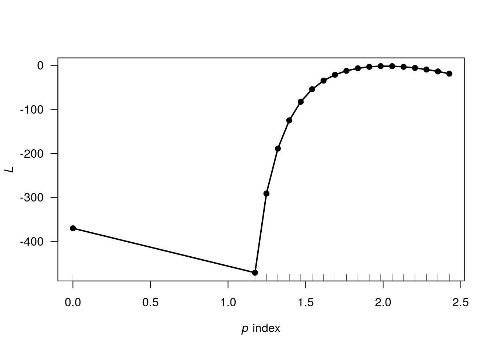
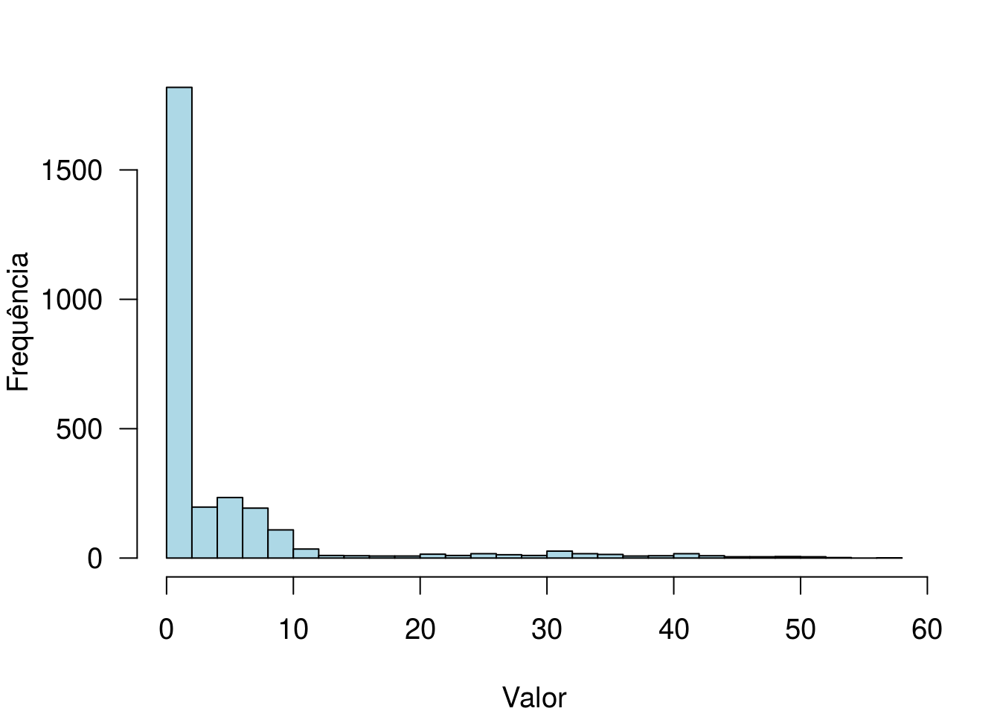
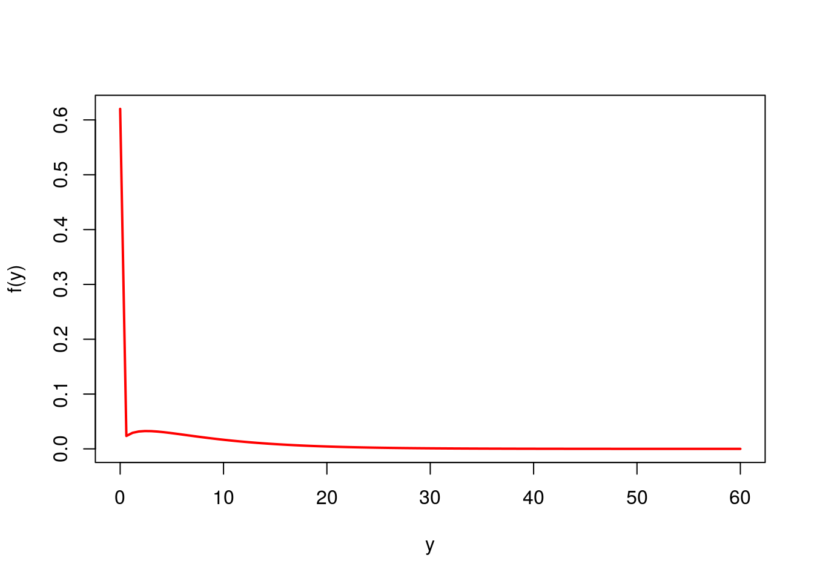
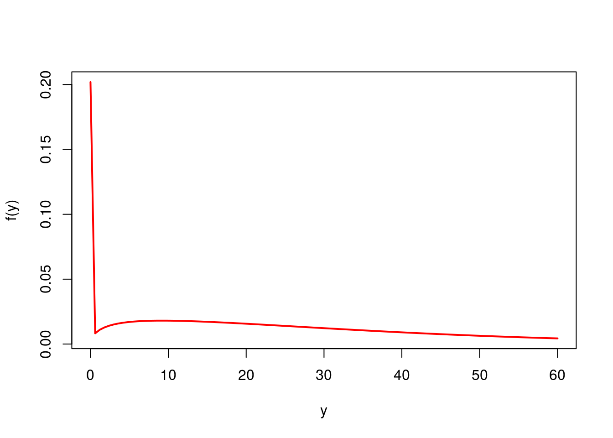
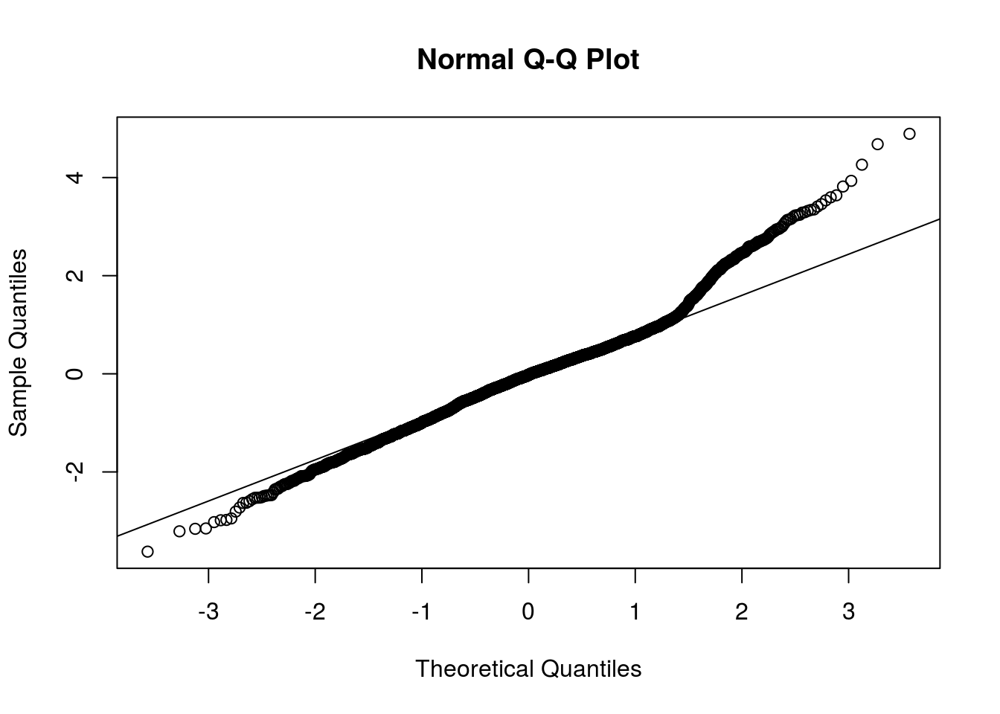

O ajuste de modelos com distribuição Tweedie pode ser feito, por exemplo, usando a biblioteca statmod. Segue um exemplo, em dados simulados.
A resposta tem distribuição \(\gamma(log(\mu)=2x-1, \sigma=1)\).
var.power é o parâmetro de potência para a média, na função de variância. link.power define a função de ligação. link.power=0 corresponde à ligação logarítmica. Para mais detalhes, consultar a documentação da função.
##
## Call:
## glm(formula = y ~ x, family = tweedie(var.power = 2, link.power = 0))
##
## Deviance Residuals:
## Min 1Q Median 3Q Max
## -2.571 -1.077 -0.244 0.195 2.364
##
## Coefficients:
## Estimate Std. Error t value Pr(>|t|)
## (Intercept) -0.9901 0.1009 -9.81 3.1e-16 ***
## x 2.1680 0.0956 22.68 < 2e-16 ***
## ---
## Signif. codes: 0 '***' 0.001 '**' 0.01 '*' 0.05 '.' 0.1 ' ' 1
##
## (Dispersion parameter for Tweedie family taken to be 1.018)
##
## Null deviance: 615.14 on 99 degrees of freedom
## Residual deviance: 116.00 on 98 degrees of freedom
## AIC: NA
##
## Number of Fisher Scoring iterations: 6Usando a função tweedie.profile, do pacote tweedie, vamos analisar o perfil de verossimilhança do parâmetro de potência
tweedie.profile(y ~ x, p.vec = c(0, seq(1.1, 2.5, length.out = 20)),
link.power = 0,
do.plot = T,
do.smooth = F)## 0 1.1 1.174 1.247 1.321 1.395 1.468 1.542 1.616 1.689 1.763 1.837 1.911 1.984 2.058 2.132 2.205 2.279 2.353 2.426 2.5
## .....................Done.
A verossimilhança é maximizada em torno de \(p=2\), indicando que a distribuição gama, para a resposta, é indicada (como já se esperava).
Vamos usar o pacote cplm
Dados sobre seguros de automóveis. Vamos modelar o valor dos sinistros nos últimos cinco anos em função de covariáveis.
Selecionando para análise apenas os dados usados no artigo de Yip e Yau (2005)
Convertendo a escala das variáveis para milhares de dólares.
##
## 0 1 2 3 4 5
## 1706 351 408 268 74 5Distribuição de frequências para os números de sinistros registrados por cada segurado. Observe que 1706 deles não registraram qualquer sinistro. Para esses casos, o valor da resposta será exatamente igual a zero.
par(las = 1, cex = 1.2, mar = c(4,4,2,2))
hist(dados$CLM_AMT5, breaks = 25, main = '', col = 'lightblue', xlab = 'Valor',
ylab = 'Frequência')
Para a análise, vamos considerar apenas algumas das variáveis disponíveis
dados <- dados[,c('CLM_AMT5', 'CAR_USE', 'MARRIED', 'AREA', 'MVR_PTS', 'INCOME')]
mod1 <- cpglm(CLM_AMT5 ~ CAR_USE + MARRIED + AREA + MVR_PTS, data = dados)
mod1##
## Call:
## cpglm(formula = CLM_AMT5 ~ CAR_USE + MARRIED + AREA + MVR_PTS,
## data = dados)
##
## Deviance Residuals:
## Min 1Q Median 3Q Max
## -4.495 -2.515 -1.972 -0.187 12.567
## Estimate Std. Error t value Pr(>|t|)
## (Intercept) 0.0565 0.1471 0.38 0.70
## CAR_USECommercial 0.1252 0.0930 1.35 0.18
## MARRIEDYes -0.1473 0.0899 -1.64 0.10
## AREAUrban 1.0096 0.1413 7.14 1.2e-12 ***
## MVR_PTS 0.2168 0.0174 12.47 < 2e-16 ***
## ---
## Signif. codes: 0 '***' 0.001 '**' 0.01 '*' 0.05 '.' 0.1 ' ' 1
##
## Estimated dispersion parameter: 7.1348
## Estimated index parameter: 1.4021
##
## Residual deviance: 18332 on 2807 degrees of freedom
## AIC: 10804
##
## Number of Fisher Scoring iterations: 6## 2 3 6 7 8 11
## 3.291 4.480 4.803 3.291 2.506 24.836## [1] 7.135## [1] 1.402Vamos plotar a distribuição ajustada para dois vetores de covariáveis da base. Adicionalmente, vamos estimar as respectivas medianas e P(y>0).
Perfil 1
## CLM_AMT5 CAR_USE MARRIED AREA MVR_PTS INCOME
## 2 0 Commercial No Urban 0 91.45Gráfico
curve(dtweedie(x, mu = fitted(mod1)[1], phi = mod1$phi, power = mod1$p),
from = 0, to = 60, col = 'red', lwd = 2, xlab = 'y', ylab = 'f(y)')
Mediana
## [1] 0\(P(y>0)\)
## [1] 0.3799Perfil 2
## CLM_AMT5 CAR_USE MARRIED AREA MVR_PTS INCOME
## 11 2.374 Commercial Yes Urban 10 108curve(dtweedie(x, mu = fitted(mod1)[6], phi = mod1$phi, power = mod1$p),
from = 0, to = 60, col = 'red', lwd = 2, xlab = 'y', ylab = 'f(y)')
## [1] 18.31## [1] 0.7981Vamos calcular os resíduos quantílicos aleatorizados
y <- dados$CLM_AMT5
mu <- fitted(mod1)
p <- ptweedie(q = y, mu = mu, phi = mod1$phi, power = mod1$p)Probabilidades acumuladas (segundo o modelo ajustado).
Aleatorizando os resíduos correspondentes a y=0.

Resíduo quantílico aleatorizado.
Vamos tentar o ajuste de uma poisson-gama composta com inflação de zeros
Neste caso temos dois preditores. O primeiro, para a média da Poisson-gama composta (ligação log). O segundo, para a inflação de zeros (ligação logito). As covariáveis inseridas nos preditores estão de acordo com o artigo de referência. Apresente suas conclusões!
Para o modelo com inflação de zeros, temos três tipos de predições:
## CLM_AMT5 CAR_USE MARRIED AREA MVR_PTS INCOME
## 2 0.00 Commercial No Urban 0 91.45
## 3 0.00 Private No Urban 2 52.88
## 6 19.22 Private Yes Urban 3 114.99
## 7 0.00 Commercial No Urban 0 125.30
## 8 0.00 Private Yes Urban 0 18.75## [1] 0.7328 0.3273 0.2296 0.7622 0.6625Probabilidade estimada referente à inflação de zeros.
## [1] 7.424 7.950 7.640 7.424 6.494Média estimada referente à parte da Poisson-gama composta.
## [1] 1.983 5.348 5.886 1.765 2.192Média estimada (geral).
Vamos comparar os AICs dos dois modelos para comparação dos ajustes.
## [1] 10804## [1] 10558O AIC do modelo 2 é bem menor, indicando melhor ajuste do modelo com inflação de zeros.